Basisvaardigheden
Formules Omschrijven
Formules omschrijven is een hele belangrijke vaardigheid voor alle vakken waar wiskunde in voorkomt. Ook voor natuurkunde is dit heel erg belangrijk. Vaak gaat het lastig omdat de letters het abstract maken, terwijl het met getallen wel goed gaat. Laten we een voorbeeld nemen:
Stel we hebben de volgende formule:
en we willen \(B\) vrijmaken zodat we krijgen \(B = \ ...\) . Hoe pakken we dit aan? We moeten aan beide kanten van het '\(=\)' teken vermenigvuldigen met \(C\). Hierdoor valt de \(C\) rechts weg, en komt er links bij:
Als je dit nog een beetje abstract vindt, probeer in plaats van de letters het eens met het volgende getallen voorbeeld:
Waarschijnlijk is het nu makkelijker te zien dat als we de \(6\) vrij willen maken, dat we de twee naar de andere kant moeten doen zodat we krijgen:
Laten we nu proberen \(C\) vrij te maken zodat we krijgen \(C = \ ...\) . We gaan door met:
Nu kunnen we beide kanten gedeelt door \(A\) doen, zodat we krijgen dat:
Als we dit controleren met ons getallen voorbeeld dan vinden we dat:
en dit klopt inderdaad.
Vergelijkingen Omschrijven
Vergelijkingen omschrijven is eigenlijk hetzelfde als een formule omschrijven. Bij beide gevallen doe je aan beide kanten van het '\(=\)' teken hetzelfde waardoor de vorm van de formule of vergelijking verandert. Laten we naar een voorbeeld kijken van een vergelijking:
De meesten zullen in een keer zien dat dit dus betekent dat \(x = 2\), maar toch is het handig om te leren hoe dit wiskundig moet, omdat het vaak niet zo makkelijk zal zijn. Dit probleem los je op door aan beide kanten van het '\(=\)' teken te delen door \(2\). Als we dat doen dan vinden we inderdaad:
Laten we het nu iets ingewikkelder maken:
We doen weer hetzelfde als eerst, maar nu beginnen we door alle termen met \(x\) links te houden en alle getallen rechts van het '\(=\)' teken te doen. We doen dus aan beide kanten van het '\(=\)' teken \(-17\). We krijgen dan:
Nu delen we aan beide kanten door 35 om te vinden:
Laten we naar nog een voorbeeld kijken:
Kan je dit antwoord nog in een oogopslag zien? Hoogstwaarschijnlijk niet. Maar het stappenplan is nog steeds hetzelfde als net. We beginnen met alle termen met \(x\) aan de linker kant te doen, en alle getallen rechts. We beginnen met aan beide kanten \(+ \frac{1}{12}\) te doen:
Nu doen we aan beide kanten \(+ \frac{1}{3} x\):
Als je niet meer weet hoe je deze twee breuken bij elkaar optelt, zie dit voorbeeld in de sectie Breuken.
Nu doen we aan beide kanten gedeelt door \(\frac{5}{6}\) en dan vinden we:
Breuken
Breuken worden vaak gebruikt in de wiskunde. Het is daarom belangrijk om goed te leren rekenen met deze breuken. Daarom staan de belangrijkste regels en hoe je met breuken moet rekenen hier op een rijtje.
Begrippen 'teller' en 'noemer'
Bij breuken gebruiken we vaak de termen "teller" en "noemer". De teller is het getal boven de deelstreep en de noemer is het getal onder de deelstreep. Dus in de volgende breuk:
is \(a\) de teller en \(b\) de noemer.
Voor breuken gelden er de volgende regels:
Belangrijk
Regels bij Breuken
-
\[\large{\frac{a}{b} + \frac{c}{b} = \frac{a + c}{b}}\]
-
\[\large{\frac{a}{b} - \frac{c}{b} = \frac{a - c}{b}}\]
-
\[\large{\frac{a}{b} + \frac{c}{d} = \frac{a * d + b * c}{b * d}}\]
-
\[\large{\frac{a}{b} - \frac{c}{d} = \frac{a * d - b * c}{b * d}}\]
-
\[\large{\frac{a}{b} * \frac{c}{d} = \frac{a * c}{b * d}}\]
-
\[\large{\frac{\frac{a}{b}}{\frac{c}{d}} = \frac{a}{b} * \frac{d}{c} = \frac{a * d}{b * c}}\]
Vaak ziet dit er nog abstract uit, dus in het onderstaande voorbeeld is er voor elke regel een getallen voorbeeld weergegeven om de regels te verduidelijken.
Getallen Voorbeeld Breuken
Getallen Voorbeeld Breuken
-
\[\large{\frac{2}{6} + \frac{1}{6} = \frac{2 + 1}{6} = \frac{3}{6} = \frac{1}{2}}\]
-
\[\large{\frac{2}{6} - \frac{1}{6} = \frac{2 - 1}{6} = \frac{1}{6}}\]
-
\[\large{\frac{1}{2} + \frac{1}{3} = \frac{1*3 + 2*1}{2*3} = \frac{5}{6}}\]
-
\[\large{\frac{1}{2} - \frac{1}{3} = \frac{1*3 - 2*1}{2*3} = \frac{1}{6}}\]
-
\[\large{\frac{3}{4} * \frac{2}{6} = \frac{3 * 2}{4 * 6} = \frac{6}{24} = \frac{1}{4}}\]
-
\[\large{\frac{\frac{1}{2}}{\frac{1}{4}} = \frac{1}{2} * \frac{4}{1} = \frac{4}{2} = 2}\]
We zien dus dat we bij optellen en aftrekken eerst gelijke noemers moeten hebben om op te kunnen tellen volgens regel \(1\) en \(2\) van de Regels bij Breuken. Als we geen gelijke noemers hebben, moeten we regel \(3\) en \(4\) gebruiken. Maar waar komen regel \(3\) en \(4\) vandaan? Dat wordt in dit onderstaande bewijs toegelicht.
Bewijs regel 3 en 4
We bewijzen eerst regel \(3\).
We beginnen met beide termen keer \(1\) te doen:
Dit mag altijd, want een getal keer \(1\) is altijd weer zichzelf. Maar we weten ook dat een getal gedeelt door zichzelf altijd gelijk is aan \(1\). Oftewel, we kunnen de \(1\) ook op deze manier schrijven:
We kunnen nu met regel \(5\) van de Regels bij Breuken dit herschrijven tot:
En omdat de volgorde bij vermenigvuldigen niet uitmaakt, kunnen we dit ook schrijven als:
Nu zien we dat de noemers gelijk zijn en we de twee tellers gewoon bij elkaar kunnen optellen volgens regel \(1\) van de Regels bij Breuken:
Voor aftrekken gelden precies dezelfde stappen, dus voor dat bewijs moet je dezelfde stappen doorlopen en het plus-teken vervangen door een min-teken.
Operaties met variabelen
Operaties klinkt als een moeilijk woord, maar dit betekent gewoon dingen zoals optellen, aftrekken, vermenigvuldigen en delen.
Belangrijk
Regels bij operaties met variabelen
-
\[\large{nA + mA = (n + m)A}\]
-
\[\large{nA - mA = (n - m)A}\]
-
\[\large{n(A + B) = nA + nB}\]
-
\[\large{n(A - B) = nA - nB}\]
-
\[\large{(A + B) (C + D) = AC + AD + BC + BD}\]
Getallen Voorbeelden
Laten we eerst kijken naar optellen en aftrekken:
-
\[\large{3A + A = 4A}\]
-
\[\large{3A - A = 2A}\]
-
\[\large{2A + (3A - B) = 5A - B}\]
Nu voorbeelden van dingen die je niet verder kan versimpelen:
-
\[\large{2A + B}\]
-
\[\large{2A - B}\]
Dus met dezelfde variabelen mag je optellen en aftrekken, met verschillende variabelen mag dit niet.
Laten we nu kijken naar vermenigvuldigen en delen:
-
\[\large{2A * A = 2A^2}\]
-
\[\large{2A * 3B = 6AB}\]
-
\[\large{\frac{2A}{4A} = \frac{1}{2}}.\]
Maar dit kan dan weer niet verder worden versimpelt:
-
\[\large{\frac{2A}{3B}}\]
En nu combinaties:
-
\[\large{2A \left(4A + 3B\right) = 8A^2 + 6AB}\]
-
\[\large{2A \left(\frac{2B}{4A} + \frac{A}{3B}\right) = B + \frac{2A^2}{3B}}\]
Machten en Wortels
Regels met Machten
Belangrijk
Kwadratisch haakjes wegwerken
-
\[\large{\left(a + b\right)^2 \equiv \left(a + b \right) \left(a + b \right) = a^2 + 2ab + b^2}\]
-
\[\large{\left(a - b\right)^2 \equiv \left(a - b \right) \left(a - b \right) = a^2 - 2ab + b^2}\]
-
\[\large{ \left(a + b \right) \left(a - b \right) = a^2 - b^2}\]
Extra Toelichting regel 1-3
Regel 1
Dit hebben we opgelost door de haakjes weg te werken op de volgende manier. :
En nu werken we van beide haakjes de haakjes uit:
En omdat de volgorde niet uitmaakt voor vermenigvuldigen kunnen we dit versimpelen tot:
(zie ook regel 5 van Regels bij operaties met variabelen)
Regel 2
We weten dat min * min is plus, en dus komt hier uit:
(zie ook regel 5 van Regels bij operaties met variabelen)
Regel 3
Nu zien we dat de kruistermen tegen elkaar wegvallen en we dus overhouden:
(zie ook regel 5 van Regels bij operaties met variabelen)
Dus bij optellen en aftrekken moet je voorzichtig zijn dat je niet alleen de twee variabelen kwadrateerd en bij elkaar optelt of aftrekt, zonder rekening te houden met de kruistermen.
Deze regels gelden voor alle soorten machten:
Belangrijk
Machten Algemeen
-
\[\large{(a*b)^n = a^n*b^n}\]
-
\[\large{\left(\frac{a}{b}\right)^n = \frac{a^n}{b^n}}\]
-
\[\large{ a^n * a^m = a^{n + m}}\]
-
\[\large{ \frac{a^n}{a^m} = a^{n - m}}\]
-
\[\large{\left(a^n\right)^m = a^{n * m}}\]
Voor wortels gelden dus precies dezelfde regels als voor machten, wat logisch is aangezien je een wortel kan schrijven als tot de macht \(\frac{1}{2}\).
Belangrijk
Regels met wortels
-
\[\large{\sqrt{a + b} \rightarrow} \ \small{\mathrm{kan \ niet \ verder \ worden \ versimpelt}}\]
-
\[\large{\sqrt{a - b} \rightarrow} \ \small{\mathrm{kan \ niet \ verder \ worden \ versimpelt}}\]
-
\[\large{\sqrt{a * b} = \sqrt{a} * \sqrt{b}}\]
-
\[\large{\sqrt{\frac{a}{b}} = \frac{\sqrt{a}}{\sqrt{b}}}\]
-
\[\large{\sqrt{\sqrt{a}} = \sqrt[4]{a}}\]
-
\[\large{\sqrt{a^2} = a}\]
-
\[\large{\sqrt[m]{a^n} = a^{\frac{n}{m}}}\]
Opmerking Regel 6
Bij de regel 6 staat er dat
Maar dit geldt alleen als \(a\) een positief getal is. Want als \(a\) een negatief getal is, dan wordt het getal na het kwadraat positief en met de wortel blijft het positief. Bijvoorbeeld:
Om dit probleem op te lossen moeten we eigenlijk absolute waarde nemen van \(a\). De absolute waarde is als volgt gedenifiëerd:
Dit zorgt er dus voor dat het getal altijd positief is. En dus om volledig correct te zijn, zouden we eigenlijk moeten zeggen dat:
Logaritmes
Een logaritme is eigenlijk het omgekeerde van een exponent. Er geldt dus dat:
Ze heffen dus elkaar op.
Net zoals een exponent heeft een logaritme een grondgetal.

Opmerking Notatie
Opmerking Notatie
De afspraak is dat als er geen grondgetal staat bij de logaritme, dat we er dan vanuit gaan dat het een \(^{10} \! \log\) is, dus een logaritme met een grondgetal 10.
Belangrijk
Regels met Logaritmes
-
\[\large{^a \! \log{(a^n)} = n = \Large{a^{^a \! \log{(n)}}}}\]
-
\[\large{^a \! \log{(b^n)} = n \ ^a \! \log{(b)}}\]
-
\[\large{^a \! \log{(b*c)} = ^a \! \log{(b)} + ^a \! \log{(c)}}\]
-
\[\large{^a \! \log{(\frac{b}{c})} = ^a \! \log{(b)} - ^a \! \log{(c)}}\]
-
\[\large{^a \! \log{(b)} = \frac{^c \! \log{(b)}}{^c \! \log{(a)}}}\]
Opmerking \(\ln\)
Opmerking ln
Voor een logaritme met een speciaal grondgetal hebben we een aparte notatie. Namelijk voor het grondgetal \(e\), het getal van euler.
Dus in plaats van een logaritme met een grondgetal \(e\) schrijven we \(\ln\), wat staat voor "natuurlijke logaritme". Maar dit is alleen een verschil in notatie en dus zijn alle regels gewoon hetzelfde als met logaritmes die een ander grondgetal hebben.
Voorbeelden Logaritmes
Voorbeeld 1: \(^3 \! \log{(x)} = 2\)
Bereken x: \(^3 \! \log{(x)} = 2\) Uitwerking
We hebben hier een logaritme met een grondgetal \(3\). Dit betekent dat we aan beide kanten van het '\(=\)' teken 3 tot de macht kunnen doen om van ons logaritme af te komen:
Dit mogen we doen, omdat we aan beide kanten van het '\(=\)' teken hetzelfde doen. Nu kunnen we dit versimpelen met behulp van regel 1 van de Regels met Logaritmes:
En dus:
Voorbeeld 2: \(\log{(x^4)} = 3\)
Bereken x: \(\log{(x^4)} = 3\) Uitwerking
Net zoals bij het vorig voorbeeld is ons doel uiteindelijk de logaritme wegwerken. Maar we moeten nu eerst van de vierde macht afkomen. Dit doen we met behulp van regel 2 van de Regels met Logaritmes:
Nu delen we aan beide kanten van het '\(=\)' teken door \(4\) om alleen de logaritme aan de linkerkant over te houden:
Er staat hier geen grondgetal bij de logaritme, wat dus betekent dat het een grondgetal 10 heeft (zie Opmerking Notatie). We doen nu aan beide kanten 10 tot de macht om van ons logaritme af te komen:
En we kunnen dit weer versimpelen met regel 1 van de Regels met Logaritmes:
En omdat we weten dat we deze \(4\) in de noemer van de exponent kunnen schrijven als een vierdemachtswortel (zie regel 7 van Regels met Wortels), wordt ons eindantwoord:
En dus:
Andere uitwerking
Als we willen kunnen we ook eerst het logaritme wegwerken en daarna pas rekening houden met de vierdemacht:
Voorbeeld 3: \(^2 \! \log{(4x)} = - ^2 \! \log{(3x)} + 6\)
Bereken x: \(^2 \! \log{(4x)} = - ^2 \! \log{(3x)} + 6\) Uitwerking
We willen eerst alle termen met \(x\) aan de linkerkant hebben. Dit doen we door aan beide kanten van het '\(=\)' teken \(+ ^2 \! \log{(3x)}\) te doen, zodat het rechts weg valt:
Nu kunnen we dit met behulp van regel 3 van de Regels met Logaritmes samenvoegen tot \(1\) logaritme:
Nu kunnen we weer het logaritme weg werken door aan beide kanten \(2\) tot de macht te doen:
(zie eventueel regel 1). We delen beide kanten door \(12\) om alleen \(x^2\) over te houden:
En nu nemen we aan beide kanten een wortel om over te houden (zie eventueel Regels met Wortels):
Voorbeeld 4: \(^{25} \! \log{(4x^4)} - 2 = ^5 \! \log{(2x)}\)
Bereken x: \(^{25} \! \log{(4x^4)} - 2 = ^5 \! \log{(2x)}\) Uitwerking
Net zoals bij het vorig voorbeeld willen we eerst alle termen met \(x\) aan de linkerkant hebben en alle getallen aan de rechterkant:
We kunnen nu alleen niet meteen onze logaritmes combineren, want ze hebben andere grondgetallen. Dit betekent dat we van een van de twee logaritmes het grondgetal moeten veranderen met behulp van regel 5 van de Regels met Logaritmes.
In dit geval veranderen we de \(^{25} \! \log\) naar een \(^{5} \! \log\), maar andersom kan ook. Nu werken we de \(5 \! \log{(25)}\) uit:
En dit kunnen we weer schrijven als:
Met behulp van regel 2 van de Regels met Logaritmes kunnen we de \(\frac{1}{2}\) in de logaritme halen:
oftewel:
Nu kunnen we met regel 4 van de Regels met Logaritmes dit combineren tot \(1\) logaritme:
Nu doen we aan beide kanten \(5\) tot de macht om van het logaritme af te komen:
En dus met regel 1: